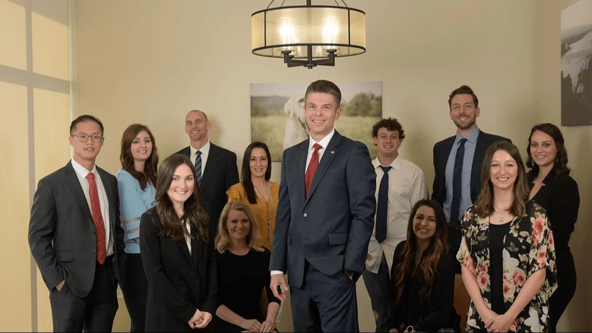

Walden Dental · Austin, Texas
Meet the Walden Dental Team in Austin
Meet the people patients may see at Walden Dental’s Austin practice.
Your visit may include treatment coordination, benefits coordination, dental assisting, hygiene care, and care led by Dr. David Frank.
One Austin office near Cedar Park. Monday to Thursday, 8:00 AM to 5:00 PM. Friday by appointment.

Your Austin dental team
The people you may meet at Walden Dental
Meet Dr. Frank and the team members in treatment coordination, benefits coordination, dental assisting, and hygiene.
Emily
Treatment Coordinator
Kelsey
Benefits Coordinator
Angela
Dental Assistant
Lani
Dental Assistant
Juli
Dental Hygienist
A coordinated visit
Several roles support your time with the practice
The current team includes coordination, assisting, and hygiene roles alongside care led by Dr. Frank.
Coordination
Treatment Coordinator
Benefits Coordinator
Clinical support
Dental Assistants
Preventive care
Dental Hygienist
Clinical leadership
Care led by Dr. David Frank
Dr. David Frank leads Walden Dental in Austin as owner and founder.
His biography documents dental education at Tufts University School of Dental Medicine and undergraduate study at the United States Air Force Academy.
One Austin office
Find the team at Shops at Walden Park
The practice is on Floor 1 and has a wheelchair-accessible entrance. Call the office if you need help planning your arrival.
Walden Dental
9800 N Lake Creek Pkwy #150
Austin, TX 78717
9800 N Lake Creek Pkwy #150
Austin, TX 78717
- Monday to Thursday
- 8:00 AM to 5:00 PM
- Friday
- By appointment only
- Saturday and Sunday
- Closed
Before you contact the team
Practical questions about the practice
These details can help you decide how to plan your next step.
Who leads clinical care at Walden Dental?
Dr. David Frank, DDS, is the owner and founder of Walden Dental in Austin.
Where does the Walden Dental team work?
The team works at 9800 N Lake Creek Pkwy #150 in Austin, on Floor 1 in Shops at Walden Park.
How can I schedule with Walden Dental?
Book online or call (512) 337-8560 to plan a visit with the Austin office.
Ready when you are
Plan your next visit with Walden Dental
Book online, call, or contact the Austin practice.